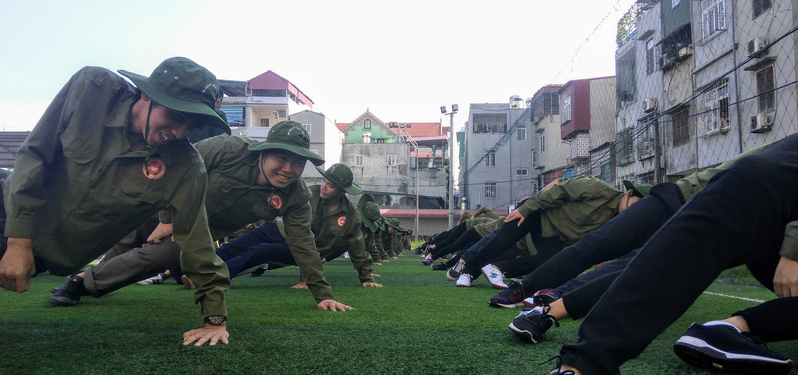
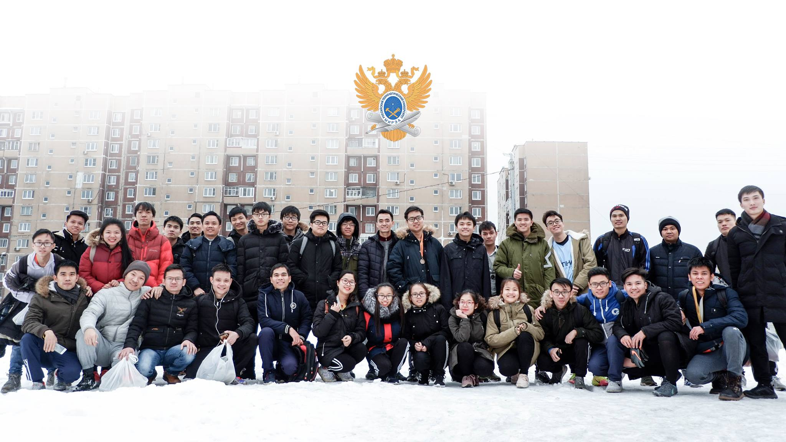

THPT CHUYÊN LAM SƠN
Chuyên Sinh - THANH HÓA
Tôi yêu nơi đó, tôi tự hào về nơi đó. Cuộc đời tôi may mắn vì được ở đó, được học, được chơi, được tận hưởng và được tự hào cùng những con người tuyệt vời và tài năng. Tôi vẫn nhớ như in những hình ảnh của một Lam Sơn Hàn Thuyên cổ kính, không gian rộng rãi của một Lam Sơn Lê Lai tươi trẻ.

HỌC VIỆN KỸ THUẬT MẬT MÃ
An toàn thông tin - HÀ NỘI
Thời gian ở Mật mã không dài, nhưng tôi có những trải nghiệm thú vị khi học đại học ở Việt Nam, được học cùng những người quý mến và tôn trọng tôi, có chút buồn khi không cùng đồng hành đến hết chặng đường. Nhưng thực sự tôi phải rời đi để viết tiếp hành trình tôi muốn.
ĐẠI HỌC CÔNG NGHỆ LIÊN BANG NGA
Software Engineering - MOSCOW
Tôi đã và đang ở nơi này, ở một nền văn hóa khác, học ở một nền giáo dục khác, học một ngôn ngữ chưa từng tiếp cận trước đó. Một chút khó khăn nhưng tôi đang được trải nghiệm giấc mơ du học thành hiện thực - điều mà nhiều lần tôi đã từng ngỡ chẳng thể làm được.
